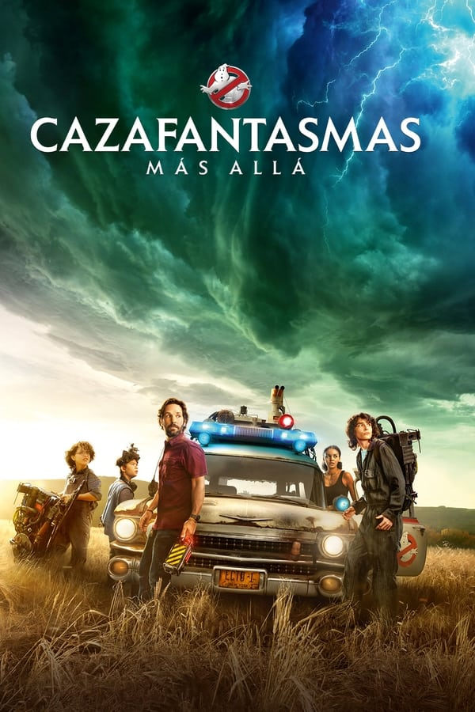

Cazafantasmas

Vista General
Una madre soltera y sus dos hijos llegan a una pequeña ciudad, descubriendo su conexión con los cazafantasmas originales y el legado secreto que dejó su abuelo tras de sí. Secuela directa de "Cazafantasmas 2".
REPARTO
Mckenna Grace como Phoebe Spengler, hija de Callie y nieta de Egon.
Carrie Coon como Callie Spengler, madre soltera e hija del fallecido Dr. Egon Spengler.
Finn Wolfhard como Trevor Spengler, hijo de Callie y nieto de Egon.
Paul Rudd como el Profesor Gary Grooberson, un profesor de ciencias de secundaria y sismólogo aficionado que se muda a Summerville, Oklahoma, con su novia Callie Spengler y sus dos hijos.
Logan Kim como Podcast, el compañero de clase de Phoebe que se interesa por la investigación paranormal.
Celeste O'Connor como Lucky Domingo, una chica de Summerville que se une a Phoebe y Trevor para formar un equipo de Cazafantasmas.
Bill Murray como el Doctor Peter Venkman, uno de los fundadores de Ghostbusters.
Dan Aykroyd como el Doctor Raymond Stantz, otro fundador de Ghostbusters.